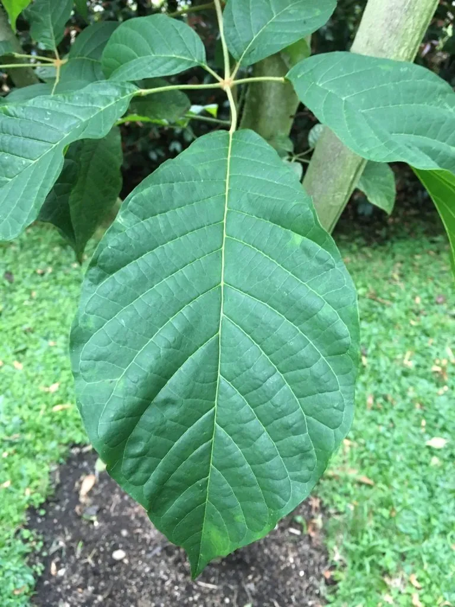

乔木 · 植物界
黄花风铃木 Handroanthus chrysanthus

原产中南美洲的落叶乔木，春季先花后叶、开金黄色喇叭状花，满树金黄，是南方城市著名的观花树种。
- 分类
- 门被子植物门纲木兰纲目唇形目科紫葳科属黄钟木属
- 栖息环境
- 海拔 800 米以下的热带亚热带地区，喜高温多湿
- 地理分布
- 原产墨西哥、巴西等中南美洲地区，中国华南地区栽培
- 保护级别
- 暂无评估；中国未列入国家重点保护野生植物名录
物种志
黄花风铃木为落叶乔木，高可达 12 m，树皮灰褐色；掌状复叶对生，小叶 5 枚，卵形至椭圆形。花期 2–4 月，先花后叶，圆锥花序顶生，花冠漏斗状、金黄或橙黄色，花径 5–8 cm，花多而密，盛开时满树金黄；蒴果长条形，成熟时开裂，种子具翅。
黄花风铃木原产墨西哥、巴西等中南美洲地区，中国广东、广西、福建、云南等地栽培，喜高温多湿、光照充足，适宜深厚肥沃、排水良好的土壤，不耐寒。春季先花后叶、满树金黄，是南方城市著名的观花行道树，常种植于公园、道路与庭院；木材坚硬，可供家具与建筑用。黄花风铃木花期较短，盛花期只有一周左右，是极具季节感的观赏树种。
形态与习性
- 株高可达 12 m，树皮灰褐色
- 花期2–4 月，先花后叶
- 果期6–7 月，蒴果长条形
- 光照喜光，不耐长期荫蔽
- 水分喜湿润，怕积水
- 主要用途公园与街道观花、庭院树、建筑与家具用材
趣味知识
- 黄花风铃木春季先花后叶，满树金黄，是南方春天最醒目的景观之一。
- 黄花风铃木的花期较短，盛花期通常只有一周左右。
- 黄花风铃木原产中南美洲，与紫花风铃木同属紫葳科。